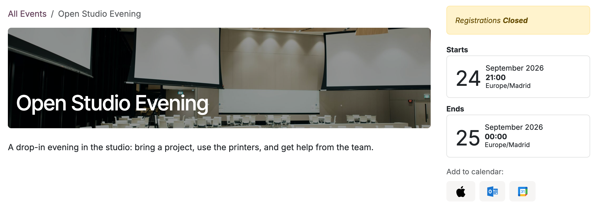
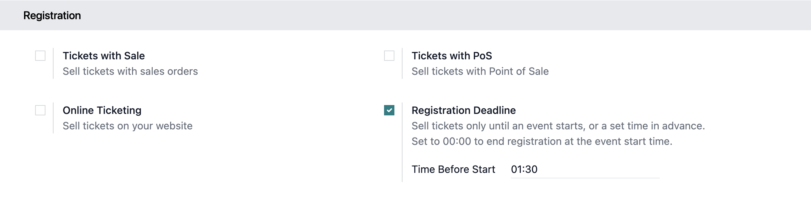
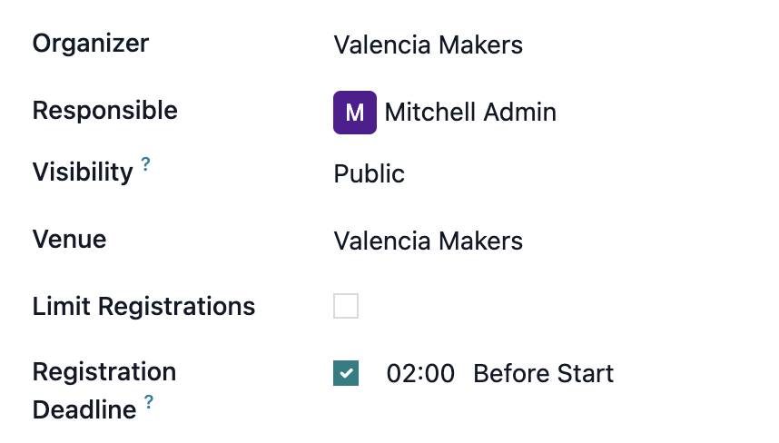

In standard Odoo, registrations stay open until an event ends, so users can sign up for an event that has already started. Event Registration Deadline closes registration when an event starts, or at a set time before, and can be configured on a global or per-event basis.

Turn it on in the global Events settings, setting a single deadline for every event.
Set a custom deadline on individual events, next to the registration limit.
Tickets with their own Registration End keep it; the deadline applies only to tickets without one.
On events with multiple slots, registration closes the same amount of time before each slot starts.

The deadline is off by default, so installing the module changes nothing. An event can be given its own deadline even when the global setting is off.
This module requires the Events app.